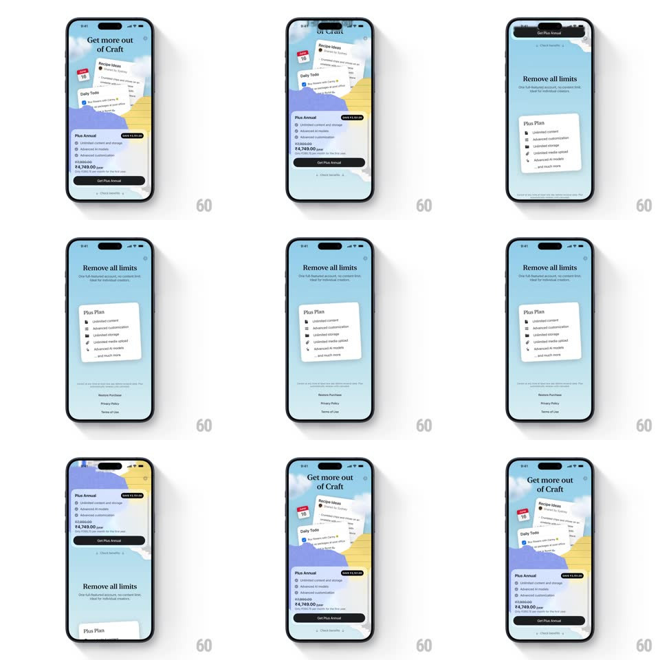

Media
Frame-by-frame

Rebuild this interaction 1:1: Craft's paywall scroll - the illustrative "Get more out of Craft" header collapses on scroll and the page snaps between the Plus Annual pitch and the "Remove all limits" Plus Plan section.

Rebuild this interaction 1:1: Craft's paywall scroll - the illustrative "Get more out of Craft" header collapses on scroll and the page snaps between the Plus Annual pitch and the "Remove all limits" Plus Plan section.
## Integration
Integration: stack-agnostic spec - springs given as stiffness/damping, timed motions as duration + curve; map every value to your framework and animation library of choice.
## Scene
Craft paywall, sky blue: an illustrative header ("Get more out of Craft" with floating Recipe Ideas and Daily Todo cards over hills and sun), then the "Plus Annual" card (SAVE badge, feature checklist, ₹4,749.00/year with the struck-through price, "Get Plus Annual" black button, "Check benefits" link). Scrolled state: "Remove all limits" headline with the "Plus Plan" checklist card and Restore Purchase / Privacy Policy / Terms of Use footer.
## Motion spec
Pattern: snappy paged scroll between paywall sections with a collapsing illustrative header.
- Scrolling down past ~30% of the header's height triggers a snap: the header illustration collapses (height to 0, 300ms ease-out, floating cards tilting outward slightly as they exit) and the "Remove all limits" section slides up to take the top (same 300ms) - the page settles exactly, no free-scroll between the two states.
- Scrolling back up reverses it: the header expands (300ms) with its cards floating back in (100ms stagger, +/-4deg settle rotation).
- The Plus Plan checklist card tilts subtly with scroll velocity while moving (max 2deg) and levels out on settle.
- The purchase footer (Restore Purchase, Privacy Policy, Terms of Use) fades in only in the scrolled state (200ms).
- No sticky top bar in the expanded state; a compact close control appears only after the snap (150ms fade).
## Calibration
- Two stable scroll positions only - the snap makes intermediate states impossible to rest in.
- The price row (struck price + current price + /year) must stay glued during the section swap.
## Reduced motion
Sections crossfade on scroll intent without the height collapse.
## Don't miss
- The SAVE badge is a small black pill pinned to the plan card's top-right - it never animates.
- The header's floating cards are the charm: they drift apart on collapse, not just fade.